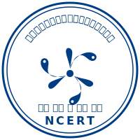
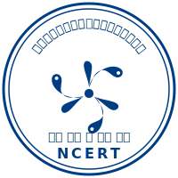

Leadership Messages
Director, DSEL
Department of School Education & Literacy
Joint Director, CIET
Central Institute of Educational Technology
Head, ICT & Training
CIET - NCERT
RVSK – 6A Framework
Real-time monitoring across 33 States/UTs.
Competency-based evaluation in 7 States/UTs.
Digital governance and school management.
Quality assurance across 6 States/UTs.
Personalized learning pathways.
Predictive analytics and chatbots.
VSK Key Statistics
Best Practices from State/UT VSKs
Gujarat — VSK 2.0
Three-tier architecture: State VSK → 33 District VSKs → 254 Block VSKs. AI-based Oral Reading Fluency tool and Early Warning System for dropout prevention.
Odisha — Early Warning
Multi-level escalation: 7 days → Headmaster, 15 days → BEO, 30 days → DEO. Ticketing tool for centralized grievance redressal.
DNH & DD — NAS Turnaround
Improved NAS ranking from bottom 5 (2021) to top 5 nationally (2024) through OMR-based mock tests and student-level monitoring.
AP & Telangana — FRS
Facial Recognition Systems for student and teacher attendance — single source of truth eliminating proxy entries.
J&K — Smart Attendance
Chatbot-based attendance system and Digital Studio for state-aligned educational content in regional languages.
Capacity Building 2.0
August 2025: 5 batches, 165 participants from 36 States/UTs. Curriculum: Data Governance, Technical Integration, 6A Framework.
13 National Programs Supported by RVSK
AI Newsletter Assistant
Ask questions about education data, statistics, state performance, and initiatives
Need quick insights from the newsletter?
Click the chat button below or the floating assistant icon to start a conversation with our AI-powered newsletter assistant.